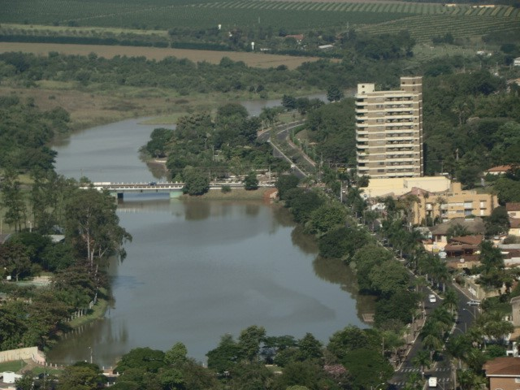
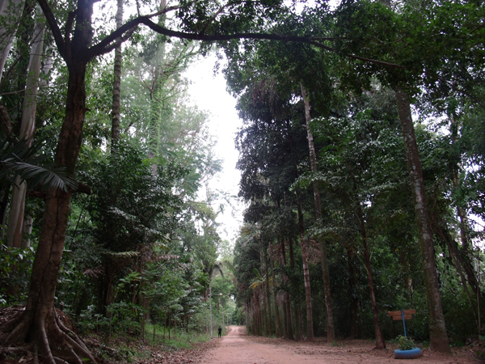
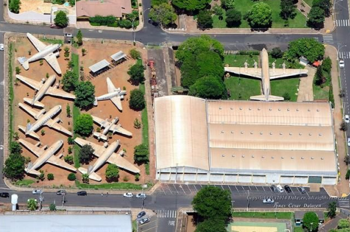

O lago artificial é o cartão postal de Bebedouro. Diversos bares e restaurantes, às margens do lago, recebem diariamente várias pessoas que aproveitam a bela paisagem e a tranquilidade do lugar para passear, fazer caminhadas, conversar com os amigos e se divertir.
Fundado em 1925, teve o Horto Florestal suas atividades iniciadas após a doação de 24,2 hectares de terra pela Prefeitura de Bebedouro e um complemento de mais 72,6 hectares adquiridos pelo próprio Estado. Todo o local, que é cortado pelo Córrego do Retiro, está vinculado à Secretaria do Meio Ambiente do Estado de São Paulo. Sua vegetação é de cerrado, próprio da região. Além de várias espécies de árvores como, farinha seca, ipês, macauvas e amendoim bravo, entre outras, no horto é possível observar a presença de animais como macaco, quati, sabiá, inhambu, perdiz, preá, gambá, siriema, tatu, bem-te-vi, tucano, pica-pau, etc.
O Museu de Bebedouro, mais conhecido como Museu do Automóvel, foi oficialmente estabelecido em 1964, sob a denominação de “Museu de Carros e Veículos Motorizados Antigos”, pelo empresário e colecionador Eduardo Andrea Matarazzo. Inicialmente sediado na cidade de São Paulo, em uma edificação pertencente as Indústrias Reunidas Francisco Matarazzo, o museu foi transferido para Bebedouro em 1969, por meio de convênio firmado com a Prefeitura de Bebedouro que construiu o prédio que abriga o museu até os dias atuais. O museu conserva um acervo de quase 200 peças, em que se destaca a coleção de 24 automóveis, a maioria fabricada entre as décadas de 1900 e 1950. Também há aeronaves, que vão de caças a aviões comerciais de grande porte, locomotivas, motocicletas, carros de combate e armamento bélico em geral, motores de grande porte, aparelhos de comunicação e outros objetos antigos.
